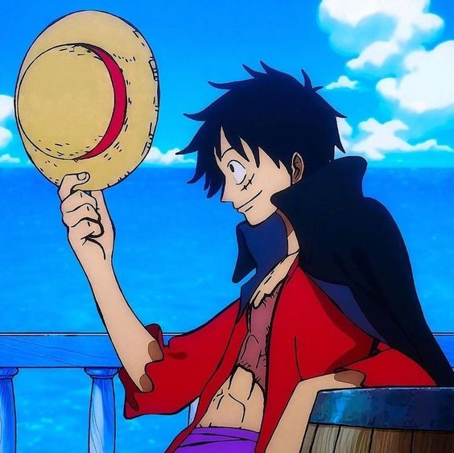
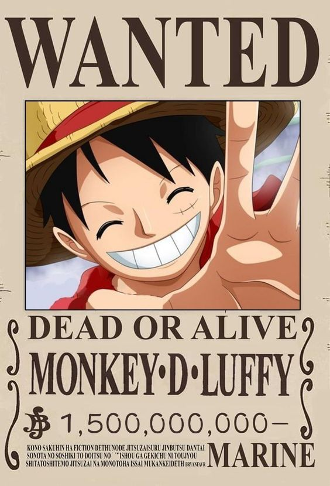
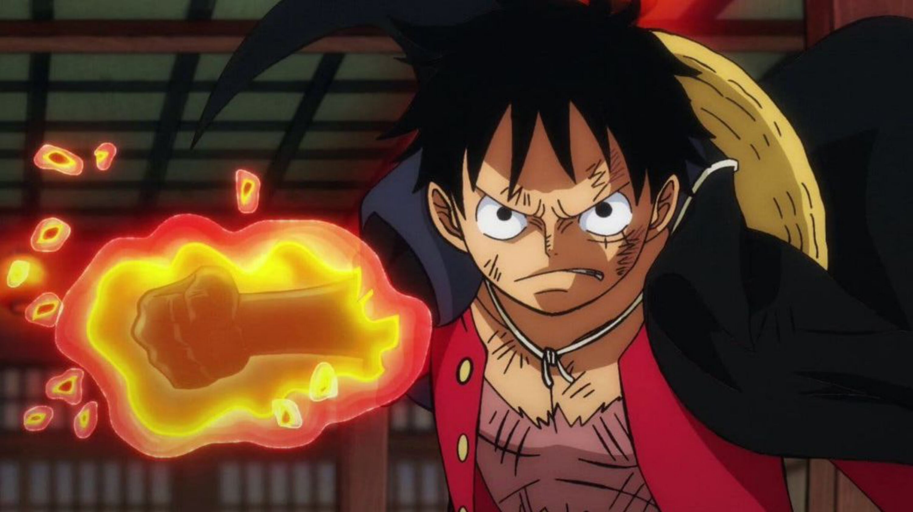
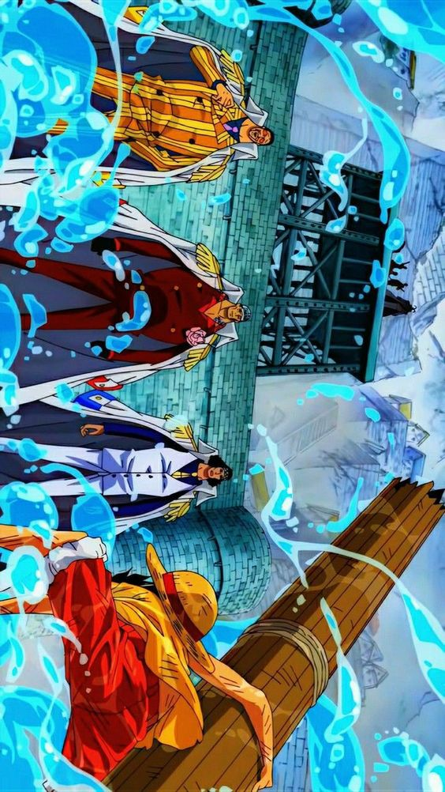

Monkey D. Luffy

{kind=link}
Es el protagonista principal de One Piece y el capitán de los Piratas del Sombrero de Paja. Es conocido como "Luffy Sombrero de Paja" debido a su característico sombrero de paja que siempre lleva puesto. Luffy es un joven pirata valiente, ingenuo y de buen corazón con el sueño de convertirse en el próximo Rey de los Piratas. Luffy es originario del East Blue y tiene una personalidad alegre y despreocupada. Es conocido por su sonrisa y su determinación inquebrantable. Una de las características más distintivas de Luffy es su habilidad elástica después de comer la Fruta del Diablo de Goma, llamada "Gomu Gomu no Mi". Esta fruta le otorga la capacidad de estirar su cuerpo como si fuera de goma, lo que le proporciona flexibilidad y fuerza sobrehumanas.

{kind=link}
Luffy tiene un sentido de la justicia y siempre está dispuesto a proteger y ayudar a sus amigos. Recluta a nuevos miembros para su tripulación a lo largo de su viaje, cada uno con habilidades únicas y objetivos personales. Algunos de los miembros más destacados de los Piratas del Sombrero de Paja incluyen a Roronoa Zoro, un espadachín habilidoso; Nami, una navegante experta y ladrona; Usopp, un tirador experto; Sanji, un talentoso cocinero y luchador; Tony Tony Chopper, un reno con habilidades de transformación; Nico Robin, una arqueóloga buscada; Franky, un cyborg con habilidades de ingeniería; Brook, un músico esqueleto; y Jinbe, un poderoso guerrero pez.

{kind=link}
A lo largo de la serie, Luffy se enfrenta a desafíos cada vez más difíciles mientras busca el One Piece. Su determinación, valentía y amistad son constantemente puestos a prueba, pero él nunca se rinde en su búsqueda de aventuras y en su lucha contra la opresión. Luffy ha demostrado ser un líder carismático y un formidable luchador, capaz de enfrentarse a enemigos poderosos y superar obstáculos aparentemente imposibles. El personaje de Luffy ha ganado una gran popularidad entre los fanáticos de One Piece debido a su personalidad entrañable, su espíritu indomable y su deseo de vivir una vida libre y sin restricciones.

{kind=link}